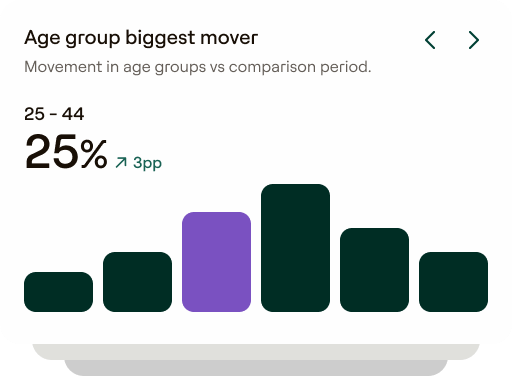

Segment movement at a glance



Led the 0-to-1 launch of Dojo's flagship analytics suite, driving £2M ARR and 20,000+ users. Transformed complex transactional data into clear customer profiles, allowing multi-site operators to track loyalty, analyse geographic demographics and use smart insights to find and keep their best guests.

Operators had a wealth of data, but lacked the clarity to make decisions.
The Problem: Multi-site operators had dashboards everywhere and answers nowhere. Takings, customer behaviour and competitor benchmarking lived in separate systems, making it impossible to get a unified view of the business.
The Opportunity: Capitalise on Dojo's scale of 49 million monthly unique cardholders to consolidate raw payment and footfall data. The goal was to build a single, trustworthy platform that drives immediate action rather than just reporting historical data.
Ran hundreds of customer interviews to establish a brand-new research repository in NoteLM. Mapped the Jobs-to-be-Done, pain relievers and value creators to decode what operators actually meant by "I want better reporting".
Implemented a rigorous Signal Framework to kill bad bets early. Instead of building blindly, we tested feature demand using notifications, content cards, emails and fake-door testing to track engagement and build a validated waitlist.
Avoided gut-feel packaging by deploying the Van Westendorp method. This allowed us to test the value proposition empirically, defining the exact threshold between an interesting feature and a monetisable product tier.
Traced an unexplained 11% drop in footfall to a specific geographic dip in neighbouring areas, proving it was an external marketing gap rather than an in-venue operational issue.
Identified a cohort of regular customers who were just 1–2 visits away from loyal status. Adjusted loyalty thresholds to nudge their behaviour, successfully lifting visit frequency and spend.
Combined geographic targeting with competitor spend benchmarking to identify an evening revenue gap. Launched a targeted campaign with a 30% uplift goal, isolated against a market control group.
Dojo helps us understand whether our promotions are actually driving footfall at the right times.

Segmented consumers into four distinct groups, providing operators with clear visibility into untapped revenue opportunities and their overall market performance.

Delivered a year-end performance campaign for merchants, consolidating complex transactional data into clear insights across customer behaviour, competitor positioning and annual takings.

Spend-per-visit trends are projected forward into an estimated takings impact — the insight framed as next month's opportunity, not last month's report.
The calls that shaped the product — and what each one cost.
Operators wanted answers, not another dashboard to interpret.
Heavier data investment brings the risk that a wrong call erodes trust, so each recommendation ships with a clear confidence level and an explainable "why".
With limited engineering capacity, focus was the scarce resource.
Saying no to several stakeholder-requested features that lacked evidence; short-term friction to protect the roadmap.
The tier had to grow ARR and adoption at the same time.
Packaged enterprise-grade features as modular add-ons rather than burying them in a premium tier, allowing for precise value-based upsells.
Led the 0-to-1 launch of Dojo's core analytics suite (Intelligence Lite and Pro), scaling the platform from scratch to £2M ARR and 20,000+ active users. This involved owning the commercialisation strategy across four international markets, securing 10+ enterprise deals, and earning a Fintech New Product of the Year shortlist.
Replacing generic banners with behaviour-based contextual triggers lifted conversion by 14%, successfully replacing reactive dashboards with a proactive insight engine.
The final platform empowers multi-site operators to instantly analyse customer demographics, map true loyalty, and forecast forward growth instead of just reviewing historical data.